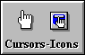
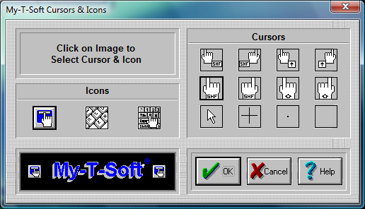

| My-T-Soft®: for Windows; Indestructible Keyboards and Indispensable Utilities; Version 1.80; User's Guide | ||
|---|---|---|
| Prev | Chapter 5. My-T-Soft Setup | Next |

Click on the Cursors & Icons Button

My-T-Soft enables you to select different Cursors and different Icons for use with My-T-Soft.
Cursors
There are 12 Cursors available; 4 right-handed, 4 left handed Cursors, and 4 specialty Cursors. They are on the right side, titled "Cursors". In order to select a Cursor, do the following steps:
Click on one of the 12 cursor pictures; it will be framed by a black rectangle.
Press the OK Button.
If you do not want to change the current layout, press the CANCEL button.
Note: For Touchscreen & Pen based systems, the "Blank" or "Invisible" cursor should be used if other applications do not show a cursor when in use. Otherwise, select the most appropriate cursor from those available.
Icons
There are 3 Icons available. They are on the left side titled "Icons". In order to select an Icon, do the following steps:
Click on one of the 3 Icon pictures; it will be framed by a black rectangle.
Press the OK.Button.
If you do not want to change the current layout, press the CANCEL button.
Note: The Icon is only used for the Minimize to Icon option in Configuration.